ObsidianNote 图床
共 67 张图片 · 更新于 2026-10-19 21:36 · 仓库地址
操作系统
第1章
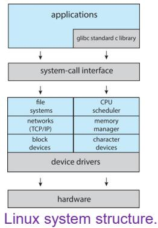
051a7a92da38a264a4be521fb57db4de53fc557aa82d4f7584520e9b2ec7d3f9.jpg
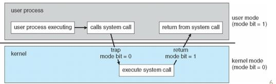
0d627aac8e92765cc270dc93142db6a8082515c1f9f136f419d43e60d30a0d85.jpg
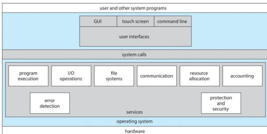
17877c47a79b49432c106b959566128318a809bd2dc5ee761f05ff8f9f6f284d.jpg
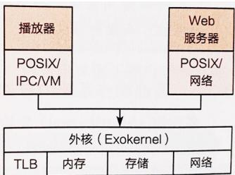
1fd9b0571c95375e46135b2e6c9fd7e4752fc1a537bf8ec3cda6c7a0c1609d47.jpg
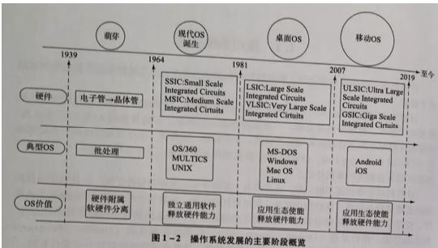
29143bbbc265da085aecdc8f5ca461e349e282a86e4077721e6664604ed0e1cc.jpg
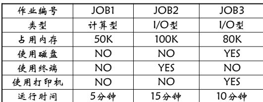
2daf9c4c7743b406b6923de5d2258e764da1fe7c52df3ef60b1eb8e53fa4f471.jpg
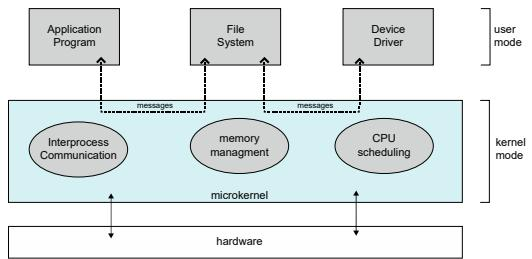
2fdbf2158403f11963896ac67bd486613766666e4b46ddf22bd09f2aa05900db.jpg
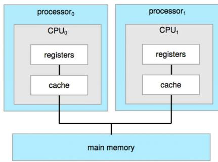
398dd5597ff8233addab076b227299dae5acff3b57a9e2b931d639eb75b5ac1b.jpg
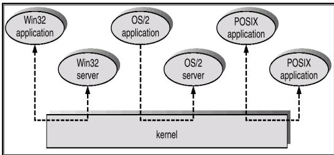
45039e386ae2667bfda0bca80f1e6a2c6e4f98e64e5f4f79d5eb0ba8b5d77479.jpg
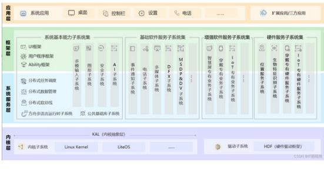
461ea3857cb99ce8aa7a0f1b811d267c704cef72385dd0329667b23e9850c904.jpg
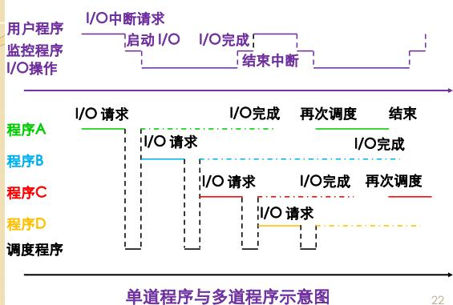
4680c8b00d5e3e595bf2025f5f14c6e775931d268eaa3b7f763823d53b10f694.jpg
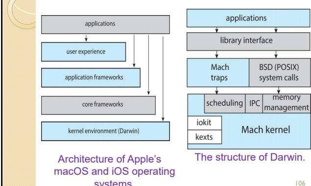
5b53f3a4c17ab0a38edf94d223a1ab41f24431c397ac458e782609a4e549f1bf.jpg
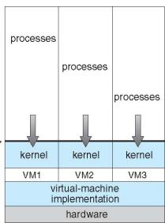
5e9df0b28e18fa5d0b2d0c67a59649a440389b4baeff9fc5d991b34c23179bff.jpg
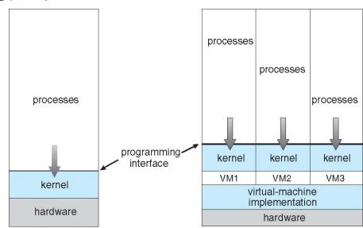
62be0dced6f0c6e5afc60c0039274a85577fefa43521c3923a3e5e37527fc272.jpg
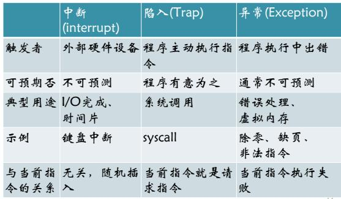
70cfd5e10a50d9bc744d4a21aa4e1f886ae4ec6997a3c8291d0ed7af6624fd50.jpg
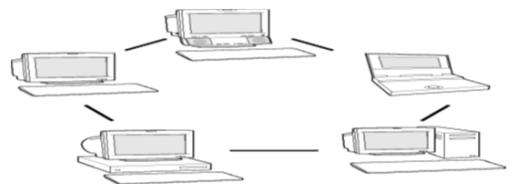
7821769b3680dcadccab61cd4def019af6d451e3b07fe119097a747555f69ab2.jpg
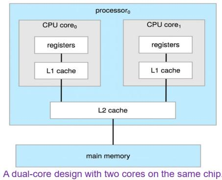
825d41679ac99a1d99514d86ee16740cfc30e44d343aef3493d774be56d8f0c7.jpg
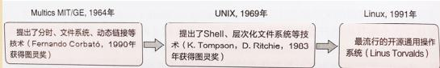
82d38e3b9433313cc6c239c0f76326517fa13706dd7397f191397f1557a5ed42.jpg
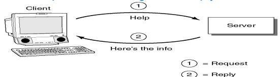
867f6db630517a1a0c727f3de93da8023dfe7b246a88a994bb7fbb667adb9799.jpg
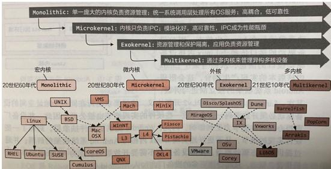
87aa924d5fbe4ae685ad966db2d340ae1a2719654141738aee90d8489d408850.jpg
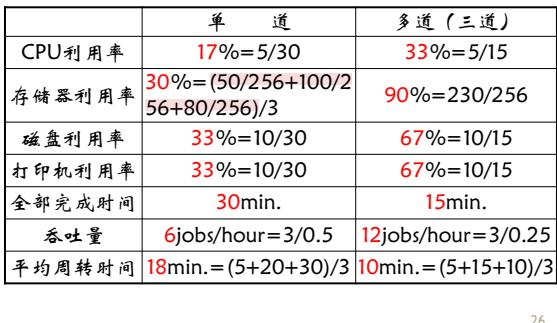
8a29b6ceae62135b4b314d07948fce75d1a47160ca9f89d6d0471877dcd17968.jpg
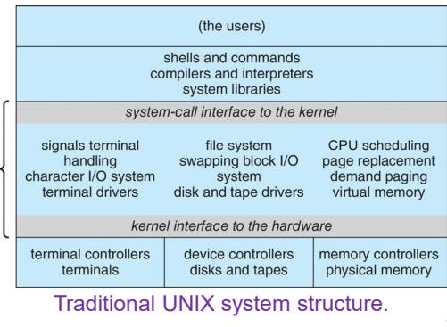
936f75e7ae905d4bc5d7aa055b6575bf3e506408b384406fa4db82959c8b046a.jpg
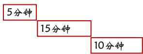
985abad1d349c8d461bc6baf772d4951c205f1e563c80a57aef9697f65589414.jpg
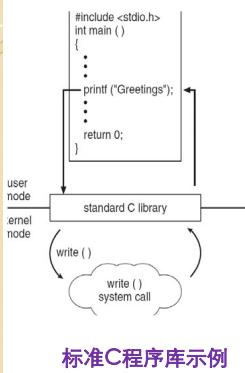
9ed828574a427798ab827c27452ac84b73d7c51591e8d01de4029c1496b5aa5b.jpg
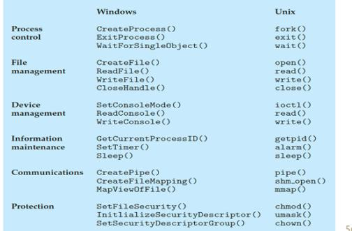
a0e4dd78cac162336fb163cc5f8629f4ab5c50a0096483c8f2f164ace5baa412.jpg
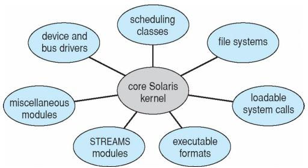
aecb21fe25e424c4a68a10ba9bd18cc51f10fadef663cecf53244f24ed8bcc73.jpg
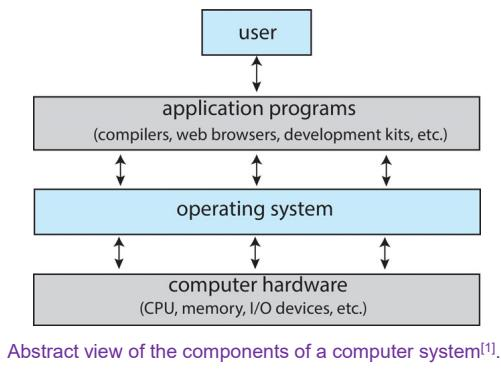
b14e25f31b5294c1d50b47e71e0856446ea2086e1994837596625c7b31be720d.jpg
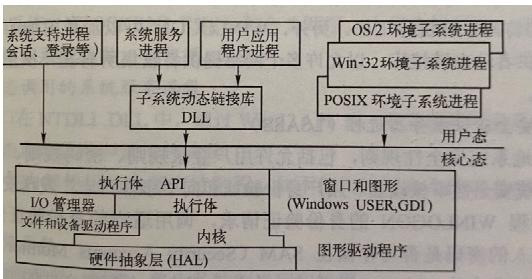
b3108f5bdb9c5e9f8b14a9bc309405342e4f6ab8a118bab3faa344571480fede.jpg
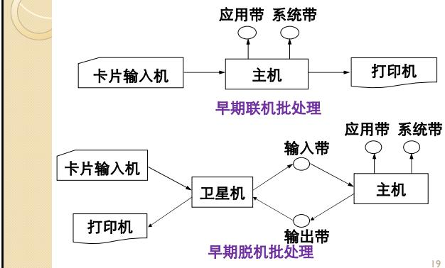
bb768a2b1089e1cb330bd6af4d4bb28de6e04c89c359cf0b69ae5ab0acc4cdf7.jpg
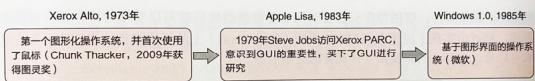
cd4590d6bb48303bbb06aece0a5575425f9125b23770e971b3d2a32b2b66f0fe.jpg
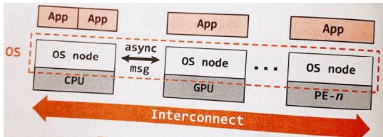
df5da5cf765e22260a93c6c8732ce04a358bed1e8ca29877cfb1b6e9de68a937.jpg
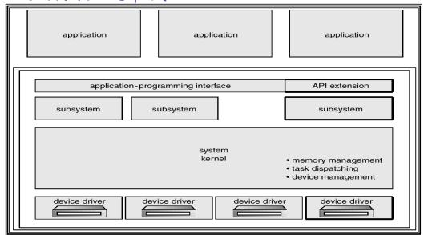
e3c428b284968ff3f68abe358113bc1e23e2237844842fff83a5d7f5b7c66102.jpg
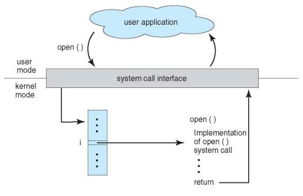
e7c5374c5038dbe9117564ce372831f6c70f23cbaa7b6ec4fc5e6fd0095dd9c5.jpg
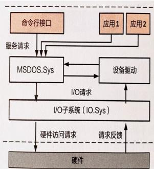
e98c49e407334884d567ccc067e17f3068ff9a59b521dd94045bc7f62183dcfc.jpg
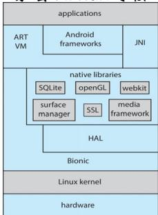
e9edccd9d77c483aa4029b3eff7ec202d52386f6c6ae7cfc421a949379d70059.jpg
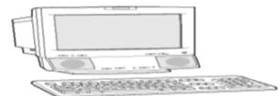
ed4dbfebad5453fd0689bd0ca151b9e9d878b81d0208a9491dde673bda5219e2.jpg
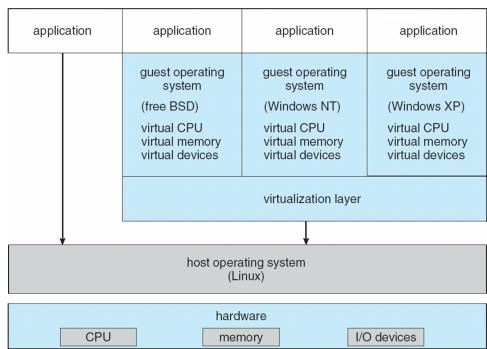
f382b2626912c7a3d4108950a636468e664683e9a92e1292696aebfecd064684.jpg
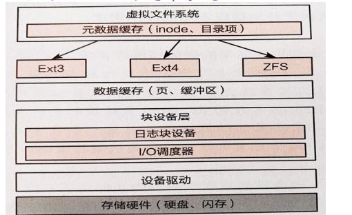
f4bec1cd046e865b24bc4d969d4a8244a9bff5f0f48ff63c5153474b7090e4f5.jpg
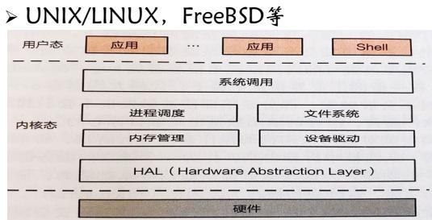
f92dc66a54e924f3a47d260ccca82d64db5294e81e05675e1f58ecc0ce1f2693.jpg
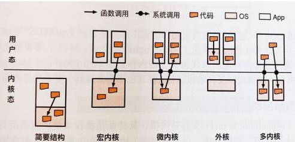
fabb9ef40f9a62172a678bce9c02b288d329fc10cc11918e3807b7b80f46d7ca.jpg
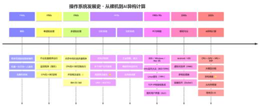
ff75d42ca7673a4a76658c72c4d6a638b44a8e7f58a28ae36d0a927321f33c72.jpg
计算机系统导论
第1章
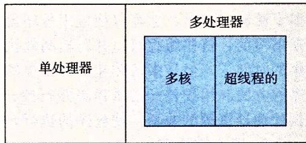
114ea969aca16a712f894f6d92de6e77d9cd667d3ef7a8c0828b53a4063523ea.jpg
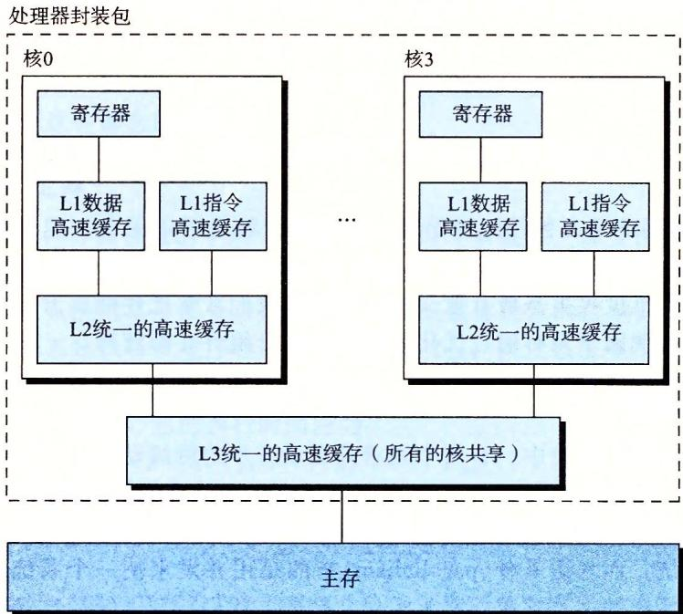
1a38cea3014f7b5bf4bf02e651b8a3db207972611cafb628115b3986ebe348c7.jpg
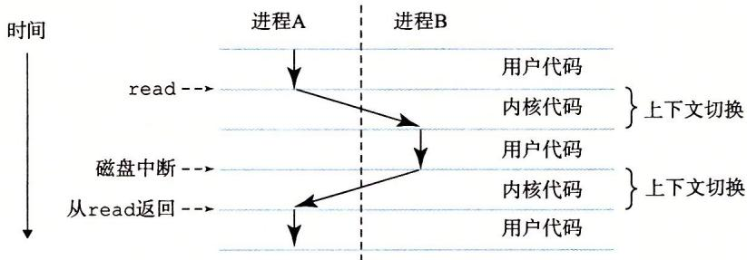
1fcb2c65119a931b7cb09ea65783b1bab99617fe0421d1d4a23fb86ce052922e.jpg
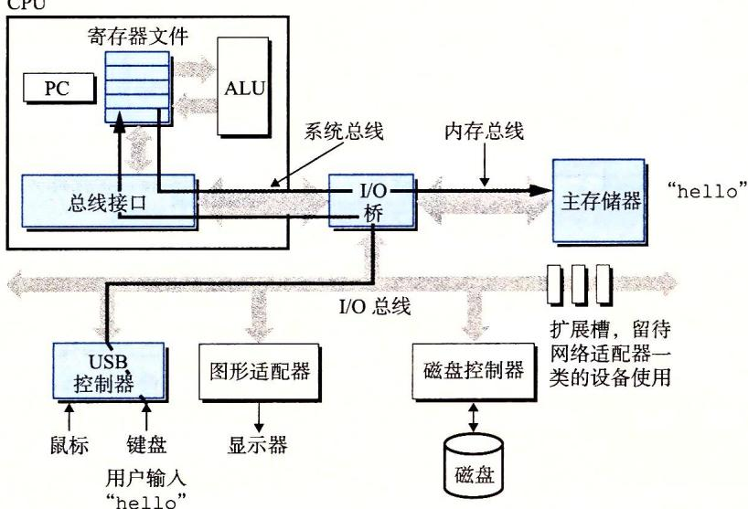
341b253ff7d43efe3954f5ec7eb7878139319c1562474be540adacbb30fe31eb.jpg
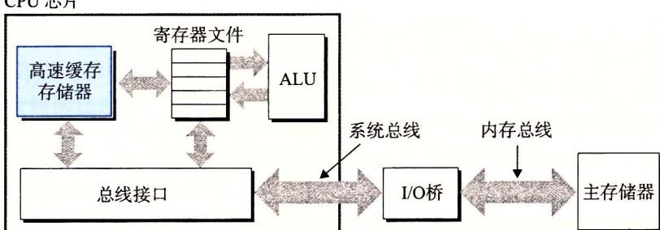
454e351f91be9f414b0c1db6ed1794118b94f3045d7a96ae9e2cd39e8fe166f1.jpg
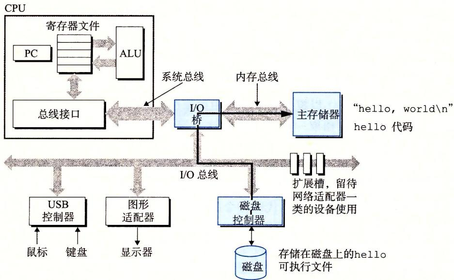
481f7f2539dc91470db53d7a463ecc57f3f063834bbb7084878cf57bbef395f1.jpg
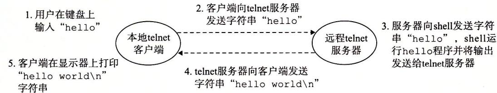
608dc6c05c78b5d11e81b8cb9015620dd2f42cbe2b0ebe21fe888dc5c053258d.jpg
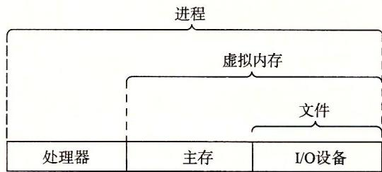
7d43eea2497edc4bbb5c1079516f68da538b8926f2b5265934c77eca6d9b9eb6.jpg
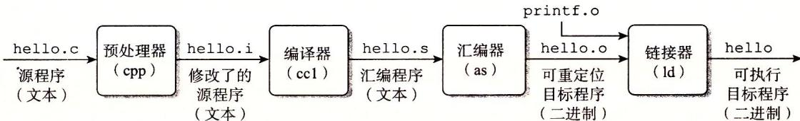
9846607b8e947352f684f42448068d4ff0a5c520e27fc9d11ca6213415151f82.jpg
b29690a0c94133fde6fe162412f56b43dbb8b458ab9061a3e9708a43a0c0f0c3.jpg
b3234ef1b35fcb5393eb8ddcdbeb61c1a939a1cfeeab84de37363ad464bae932.jpg
bcdf39e58321ad0c4e185f43fdce2dc7ba96f83121f76dccc3011e1d6e841cd4.jpg
d40bfe81198c167b22cf3c9d6933f0869dc584c07eee882caa85d21abb954c07.jpg
f3cea36134baf30396c9793d36701203b226fbcc2252ec5679efcefac3e2383e.jpg
第2章
3831a6f98a11b0f7b4c29c6f43dfc4c478bc76712907607088fb60c69b663e36.jpg
4e3c62f18e583e657be2ca5410e8b5f69276e1221827920761ee228d33c9e5a8.jpg
4e49cb1b38d79770c45b152641875fd042c6511cfaf67cc18ff1e182580d0857.jpg
55975daa32727990ede84b1c0bee855ef7463f65431fe74444cda374116350cb.jpg
5c6e34e2107d07421c7b3947b33ab2a161547750bba028346b0698d015f1d88c.jpg
62393e28e0a3697442388cc1b6c4db0a35f2e327c8fd08b770147a22eeff330d.jpg
6f4484dc2388d8fcdf1557a1f5c0437d7910717cdc14180e1e9444c17c3e6ab4.jpg
8f3ca147f0694982181812a3ab50eb4f1f1cf5a2ee058e6b330acaca9722f315.jpg
a339770ff49687062938ce7004a2cb10f1828dcd990491020df1ac9e12dce0d0.jpg
c45f89e82913d5828e7ca6ed051f379817eaaadbb4f0744a81f20caa579832de.jpg
e0ef285140db737efedbeb3e5b2374b2cd767b27d06f86a66a425215fe387056.jpg
f80876ec021ea6562c8da69839b3e89b0093f9dbd8d31d77a9c0f4fb93200840.jpg